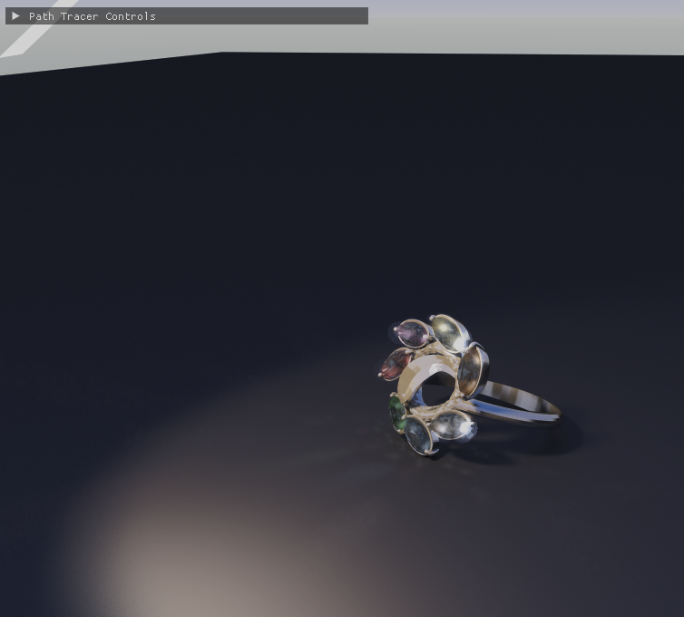
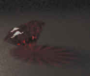
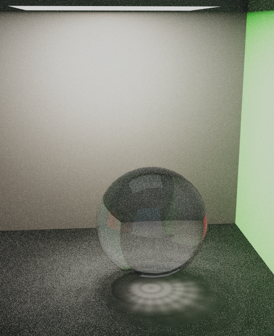
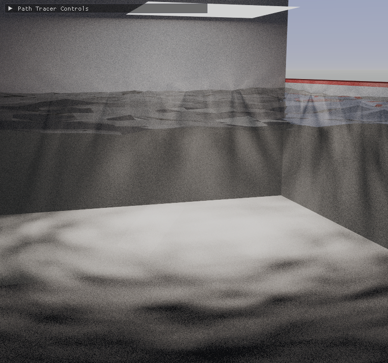

GPU Path Tracer with Caustics and Bloom
OpenGL 4.3 Compute Shader path tracer featuring photon-mapped caustics, bloom post-processing, and real-time interactive rendering
Featured Render

Diamond ring scene: 7 colored diamond gems on a metal band, rendered with path tracing, photon-mapped caustics, and bloom. 1024 SPP.
Team Members
Introduction
The goal of this project was to build a working GPU path tracer from scratch that could convincingly simulate two of the most visually striking optical phenomena: specular reflection and refraction. Beyond the core goals, we set two stretch targets: caustics and bloom.
To make the renderer interactive rather than a batch offline tool, all path tracing computation runs entirely on the GPU using OpenGL 4.3 Compute Shaders. This allows progressive rendering in a live window — accumulating samples over time — and real-time parameter adjustment through an ImGui control panel.
The scene is a jewellery ring set with seven small diamonds of different colors on a dark floor under an area light. It was chosen specifically because it exercises all implemented features: the metal band tests specular reflection, the diamonds test refraction and caustics, and the bright facets test bloom.
Architecture
The system is split into two cooperating layers: a CPU layer (C++) that handles scene description, geometry processing, and GPU resource management, and a GPU layer (a single GLSL compute shader) that performs all light transport computation.
The compute shader implements three distinct passes selected by a u_passMode uniform:
- Pass 1 — Photon Pass: traces photons from the light source through the scene to build a caustic buffer.
- Pass 0 — Path Trace Pass: casts a primary ray per pixel, evaluates the full path tracing integral (NEE + indirect bounces), and reads back caustic contributions.
- Pass 2 — Display Pass: applies bloom and tone mapping to the accumulated HDR buffer and writes to a display texture.
// Each frame: dispatch all three passes in sequence
// Pass 1 — build caustic photon map
glUniform1i(u_passMode, 1);
glDispatchCompute(W/8, H/8, 1);
glMemoryBarrier(GL_SHADER_IMAGE_ACCESS_BARRIER_BIT);
// Pass 0 — path trace (uses caustic buffer)
glUniform1i(u_passMode, 0);
glDispatchCompute(W/8, H/8, 1);
glMemoryBarrier(GL_SHADER_IMAGE_ACCESS_BARRIER_BIT);
// Pass 2 — bloom + tone mapping
glUniform1i(u_passMode, 2);
glDispatchCompute(W/8, H/8, 1);
glMemoryBarrier(GL_SHADER_IMAGE_ACCESS_BARRIER_BIT);Separating outImage (pure HDR radiance accumulation) from displayImage (post-processed) was a deliberate design decision: bloom is not physically part of the radiance integral and must not be baked into the accumulation buffer, otherwise it compounds across frames as the running average converges.
BVH Acceleration Structure
BVH construction uses the Surface Area Heuristic (SAH) with 12 buckets per split candidate. SAH chooses the split that minimises the expected traversal cost:
cost = C_traversal + (SA_left / SA_parent) * N_left
+ (SA_right / SA_parent) * N_rightThe resulting tree is flattened into two parallel arrays — BVHNodeGPU[] and reordered TriangleGPU[] — uploaded to SSBOs and indexed without pointer chasing.
BVH traversal in the shader uses an iterative, stack-based depth-first approach. The key optimisation is nearest-child ordering: before pushing both children onto the stack, both AABBs are tested to find which the ray enters first, then the farther child is pushed first so the closer child sits on top. This lets the traversal update the best intersection distance sooner, pruning more nodes via early AABB rejection.
if (hitL && hitR) {
// push farther first so closer is popped first
if (tL < tR) { stack[ptr++] = rightChild; stack[ptr++] = leftChild; }
else { stack[ptr++] = leftChild; stack[ptr++] = rightChild; }
}Reflection and Refraction
Material branching handles four cases:
- Dielectrics (glass, diamonds): Fresnel reflectance
kris computed via the Schlick approximation. A random number stochastically selects between a reflected ray and a refracted ray. The IORu_ioris a runtime uniform (default 2.417 for diamond). Total internal reflection is handled by checking whetherrefract()returns a degenerate vector. - Metals: ideal reflection direction perturbed by a Phong lobe, modelling micro-facet roughness. Throughput is attenuated by a metallic F0 tint.
- Mirrors: perfect specular reflection, throughput scaled by Ks.
- Diffuse / Wood: cosine-weighted hemisphere sampling with Blinn-Phong BRDF.
float kr = fresnel(currDir, nl, u_ior);
if (rand() < kr)
wi = reflect(currDir, nl);
else {
float eta = into ? (1.0 / u_ior) : u_ior;
wi = refract(currDir, nl, eta);
if (length(wi) < 0.01) wi = reflect(currDir, nl); // TIR fallback
}Direct Lighting — Next Event Estimation
Pure path tracing has high variance for scenes with small light sources. We mitigate this with Next Event Estimation (NEE): at every diffuse bounce, we explicitly sample a point on the light source and evaluate the direct lighting contribution if the shadow ray is unoccluded.
Light sampling uses a precomputed area CDF uploaded at startup. Previously, this CDF was recomputed inside the shader on every sampleLight() call — an O(n) loop over all emissive triangles repeated for every bounce of every ray of every pixel of every frame. The current implementation precomputes the cumulative area on the CPU and reduces sampleLight() to a single binary search through the SSBO.
Shadow rays for non-opaque (dielectric) occluders use a multi-bounce shadow loop: if the shadow ray hits a dielectric surface, Beer-Lambert attenuation (tinted by the object's color) is applied and the shadow ray continues rather than immediately concluding occlusion. This produces coloured shadows through glass objects.
Caustics via Photon Mapping
Standard path tracing cannot efficiently capture caustics — the probability of a camera ray finding the specific path light → specular → specular → diffuse through random sampling is extremely low. We address this with a forward photon pass.
In passMode 1, each pixel invocation launches u_photonsPerPixel photons (default 4) from the light surface. Each photon is traced forward through the scene:
- At dielectric surfaces, Fresnel determines reflection vs. refraction. Photon color accumulates Beer-Lambert tinting for colored glass.
- When the photon lands on a diffuse surface after passing through at least one dielectric, it is projected back into screen space via
worldToPixel()and splatted ontocausticImageusing a Gaussian kernel of radius 2.
The splat uses perspective compensation — photons hitting geometry closer to the camera are spread over a smaller screen area than those hitting distant geometry, keeping visual density consistent.
In passMode 0, the path trace pass reads back the caustic buffer, applies a 3×3 box filter to reduce noise, lifts mid-tones with a power curve (pow(caustic, 0.75)), and adds the result to the radiance estimate.
Caustic Examples

Caustics projected beneath the diamond ring — bright focal patterns formed by light refracting through the gem facets.

Caustic test with a transparent glass sphere — concentrated light spot on the floor beneath the sphere.

Pool-style caustic pattern showing the dancing light focus typical of refractive surfaces over water or glass.
Bloom Post-Processing
Bloom is implemented entirely in passMode 2 as a post-process on the already tone-mapped outImage, so it does not affect the physics of the accumulation.
computeGlow() runs three layers:
- Near bloom (radius 5): a Gaussian-weighted sum of high-luminance pixels close to the current pixel.
- Far bloom (radius 12): a wider, dimmer Gaussian for the broader glow halo.
- Star streaks: 8-directional line samples extending up to 8 pixels, creating the characteristic jewellery star-burst around bright facets.
All three layers apply a diamond mask to prevent bloom from bleeding off non-specular surfaces. The mask is a per-pixel binary flag stored in the alpha channel of outImage, set to 1.0 wherever the primary ray first hits a dielectric surface. The mask is only computed via a ray cast on frame 0; subsequent frames reuse the stored alpha value, saving one full intersectScene() traversal per pixel per frame.
Tone Mapping
Three operators are available at runtime via the ImGui combo box, all applied before gamma encoding:
// Linear
vec3 mapped = clamp(hdr * u_exposure, 0.0, 1.0);
// ACES Filmic (Narkowicz 2015)
// x*(a*x+b) / (x*(c*x+d)+e)
vec3 mapped = (x*(2.51*x+0.03)) / (x*(2.43*x+0.59)+0.14);
// Reinhard
vec3 mapped = x / (x + 1.0);An exposure slider scales the HDR value before the operator, allowing independent control of brightness and contrast.
Progressive Rendering and Accumulation
Rather than rendering all samples in a single blocking dispatch, the renderer accumulates one sample per pixel per frame using a running average:
accumulated = mix(accumulated, newSample, 1.0 / float(u_frame + 1));This produces a live preview that converges toward ground truth as sample count increases. The target is 1024 SPP, after which the image is also saved to a PPM file. When any camera key is held or any ImGui parameter changes, the sample count resets to 0 so the image restarts cleanly.
Future Work
Denoising: Even at 1024 SPP some noise remains, particularly in regions lit predominantly by indirect light. Integrating a spatial or deep learning denoiser (e.g., OIDN) as a final post-process pass would allow high-quality output at lower SPP budgets.